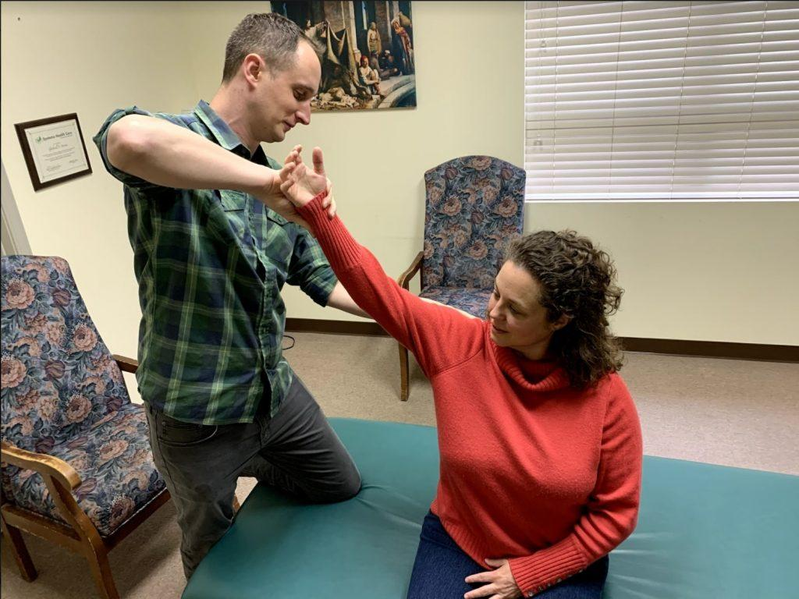

What I Offer
Services
Functional Medicine
Functional medicine is a systems approach to health care with the object of uncovering the root cause. The body is made up of multiple interdependent systems. What affects one will affect the other. A functional medicine approach takes that into account and is truly holistic in nature.
We do this through a variety of ways. One particular way is interacting with the patient as an individual not as a set of symptoms. We do this by taking time. The average doctor visit is approximately 8-10 minutes long. As a functional medicine practitioner, I spend typically between 30 to 60 minutes with clients. This allows us the needed time to investigate what is truly going on.
Another facet of functional medicine is appropriate and comprehensive lab work. To truly understand what is going on we utilize cutting edge and in-depth testing. This allows us to capture, in-part, the big picture of what is happening in the body. Through this, a detailed history, and other techniques I am able to effectively and efficiently support the body’s natural healing processes.
Schedule HereAt A Glance
What Do I Offer For Good Health?
From functional medicine to nutrition consultations to musculoskeletal care, I provide a holistic approach to meet my patient’s needs.
Functional Medicine
An in depth look utilizing the latest labs and research to uncover the root cause.
Applied Kinesiology
A holistic approach using neurological testing to fine tune the treatment process.
Nutrition
An ancestral approach to diet focusing on nutrient-dense foods to support optimal health and longevity.
Structural Care
Utilizing myofascial therapy and other techniques to address physical pain and injuries.
Balance Body & Mind
Through meditation, connecting back to nature, and stress reduction exercises.
What is Systems Health Care?
See the advanced AK technique
How It Works
Applied Kinesiology
Applied kinesiology or AK is a system of techniques and diagnostic procedures to evaluate a patient’s condition. It was developed by Dr. George Goodheart in the 1960s. Utilizing manual muscle testing to treat a difficult condition, Dr. Goodheart was able to ascertain what the underlying cause was, a dysfunctioning muscle, and hone in on the needed treatment. AK has since evolved into what it is today.
The manual muscle test is at the center of AK. Through it we are able to assess the state of the nervous system and from there the rest of the body. In a very real sense, our body keeps a score of all the things going on with it. When a dysfunctional muscle is found, diagnostic challenges are used to determine the appropriate treatment and thereby restore proper function. The condition of each person is multilayered so AK functions as a fine tuning guide in treatment.
AK, like functional medicine, is a systems approach that views the body holistically. I use an advanced form of AK called Systems Health Care (SHC). By appropriately evaluating and testing, a SHC practitioner can better aid the natural healing ability of the body. SHC incorporates herbal remedies and supplementation, myofascial work, nutrition, and many other techniques that truly are tailored to individual needs.
Want the full picture, including where AK came from and how a muscle test actually works? Read What Is Applied Kinesiology?
Schedule Your Free Consult Now
Book Your Free 15-Minute ConsultAncestral Nutrition
Nutrition
My approach with nutrition is an ancestral one. For millennia, humans ate a particular way from what they gathered or hunted. The anthropological data strongly supports this. Chronic disease was almost unheard of anciently. People lived just as long as we do today, so long as they were free from infections, injuries, or warfare.
The agricultural revolution shifted everything in a downward spiral. It brought states of malnutrition. People were shorter, brains shrunk, and chronic disease increased dramatically. The industrial revolution was the agricultural revolution on steriods in regards to chronic disease. In the last 100 years we have seen an exponential increase. We are sicker than we have ever been. We must put a stop to it and we can if we look to the past.
Our ancestors got most of their energy from animal-based foods. They also ate what they could gather. Lots of fruit, honey, some vegetables and roots, and on occasion nuts and seeds. Generally, they ate the opposite of the way we do today. Helping people understand this and incorporate it into their lives is a crucial part of my treatment process. And better yet, it is one of the best ways to live a long and healthy life.


Movement & Recovery
Structural Care
Movement is life. Without it, we die. Another thing modern society has brought us is the age of convenience. Our ancestors walked approximately 5 miles per day. They carried, lifted, threw, jumped, and sprinted. They didn’t have to think about this, it was just part of life. Now we rarely have to lift a finger to do anything. I am not saying we need to give up modern conveniences. But we need to address them appropriately if we want to be and stay healthy.
Resistance training and walking are some of my go-to exercises everyday and I encourage my patients to do the same. Resistance training is one of the best ways to support overall health and longevity. Walking is a crucial part of life too especially in nature. These in combination with corrective exercise can go a long way at achieving and maintaining a healthy lifestyle.
All that being said, oftentimes we still deal with pain from injuries or accidents. Maybe we are just having a setback or want to reach a new PR. Myofascial therapy is one of my primary treatments I use to help people recover. And in conjunction with AK, I am able to ascertain what is going on and what needs to be treated. These tools allow me to get to the heart of the matter quickly and effectively.
Mind-Body Balance
Balance Body & Mind
Meditation is one of the most important practices I do everyday. For the longest time I ignored it. I thought prayer was sufficient, but I was wrong. It has helped me in many ways. I am still a novice at it, but it is an important component when I work with a patient. Finding the time to still your mind can do wonders.
We need to connect back with nature. We have become divorced from it, a divorce that never should have happened. We are connected to it. I often recommend nature walking, but whatever the activity, getting back to our roots in nature is tremendously important. It can improve immune function, reduce stress, and boost mood among many things.
Lastly, stress reduction in general. There are many ways to do this, but we live in an over-stressed society. We overwork, overthink, and overdo. We need to slow down. We need to be present, mindful. Much of what ails us stems from stress. If we can take the time to do this we will find ourselves balanced both body and mind, and with nature once again.

Go Deeper
Conditions & Lab Testing
Dedicated pages on the conditions I focus on most, and the lab testing that guides each plan.